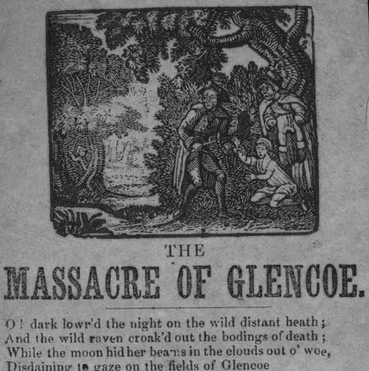

Flora & Donald or The Pride of Glencoe
Source: a broadside on file at the Bodleian Library of the University of OxfordPrinted between 1840 and 1866 by J. Harkness, Printer, 121, Church Street, Preston. [2806 c.14(26)]
Tune
From the "Greig-Duncan Folksong Collection vol 1 n°115 (1981)Noted by JB Duncan from Margaret Gillespie, Aberdeenshire in 1905
Sequenced by Christian Souchon
{kind=link}


|
1. O' dark lowred the night on the wild distant heath
And the wild raven croaked out the bodings of death While the moon hid her beams in the clouds out of woe Disdaining to gaze on the fields of Glencoe 2. While deep balmy sleep closed each eye in rest And the chieftain slumbered with peace in his breast Ne'er dreading the hour that fate seemed to show That bloody and pale, he should lie in Glencoe 3. But a flash soon denoted the signal was given And the thunders of death wa'kd the meteors of heaven While Flora, poor Flora she wandered in woe To seek for MacDonald, the pride of Glencoe 4. O' sudden a flash on her vision did glare While a cannon's loud thunder was pealed through the air It wakened ten thousand brave heroes below And roared through the caverns of mighty Glencoe 5. The smoke then arose from our dear native glen With the shrieks of the women and cries of the men Naked mothers were shot with their babes as they ran For the English had risen to murder the clan 6. O' many a warrior that evening was slain While the blaze of the village gleamed far o'er the plain A hundred MacDonalds that night were laid low And their blood stained the heath of their native Glencoe 7. Then Flora she shrieked while loose hung her hair O' where is my Donald, o' tell me, O' where? He slumbers forever now free from his woe And stretched, cold, and bloody, he lies in Glencoe 8. Her dark rolling eyes then did kindle with fire She fell on his body and then did expire No more lovely Flora again feared her foe But in death found her Donald, the pride of Glencoe 9. And now o'er their heads the green grass does wave And the wild flowers do nod o'er their desolate grave And the strangers that pass shed a tear as they go For Flora and Donald, the pride of Glencoe |
1. La nuit sombre recouvre un sauvage décor,
Le corbeau clame au ciel ses présages de mort, La lune en la nuée disparaît aussitôt, Pour ne plus luire sur les plaines de Glencoe. 2. Le sommeil réparait les fatigues du jour. Le chef rassénéré s'endormait à son tour, Inconscient du sort qu'il subirait bientôt: Ensanglanté, livide, il mourrait à Glencoe. 3. Soudain, fatal signal, on voit luire l'éclair; Car la mort qui s'apprête éveille le tonnerre Et la voix de Flora qui se rompt en sanglots Appelle McDonald, la fierté de Glencoe. 4. Bientôt le ciel s'embrase et c'est un autre éclair. Et le bruit du canon vient ébranler l'éther. Il tire du sommeil des milliers de héros Qui reposaient au fond des tombes de Glencoe 5. Notre cher glen natal s'est empli de fumées; Partout fusent les cris des femmes apeurées, Des mères, des enfants qu'on abat dans le dos: L'Anglais a décidé d'exterminer Glencoe. 6. Oh, combien de guerriers cette nuit ont péri, Tandis que le val luit des feux de l'incendie? Plus de cent McDonald, victimes des bourreaux. Et leur sang jaillit sur les landes de Glencoe. 7. Ce cri déchirant, c'est Flora qui l'a poussé: "Où donc est mon Donald?" dit-elle, échevelée. Il repose. La mort a mis fin à ses maux. Son corps ensanglanté gît ici, dans Glencoe. 8. Une sombre lueur passe dans son regard. Elle meurt, étreignant le cadavre blafard. O Flora, tu n'as plus à craindre ses rivaux: Vas, rejoins ton Donald, la fierté de Glencoe! 9. Désormais sur leurs corps l'herbe verte s'incline. Leur tombe désolée se pare d'aubépine. Le passant jette un pleur, contemplant le tombeau De Donald et Flora, la fierté de Glencoe. (Trad. Ch.Souchon (c) 2005) |
|
Remark:
This song should not be mistaken for another "Donald and Flora", also a song with political background -General Burgoyne's defeat at Saratoga, New York on 15th October 1777-, which is included in Johnson's "Scots Musical Museum" Volume III under N° 252, page 261. The first verse begins thus: 'When merry hearts were gay, Careless of ought but play, Poor Flora slipt away Sad'ning to Mora...' |
Remarque:
Il ne faut pas confondre ce chant avec un autre "Donald et Flora", lui aussi un chant à contenu politique -la défaite du Général Burgoyne à Saratoga, près de New York, le 15 octobre 1777-, qui figure dans le "Musée Musical Ecossais" Volume III N°252 page 261. La première strophe commence ainsi: 'Aux autres l'insouciance, Les jeux, les chants, la danse; La pauvre Flora fuit la tristesse à Mora...' |
Donald et Flora
Sequenced by Christian Souchon